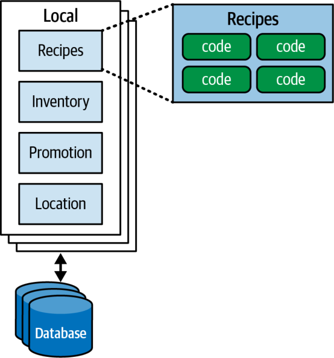
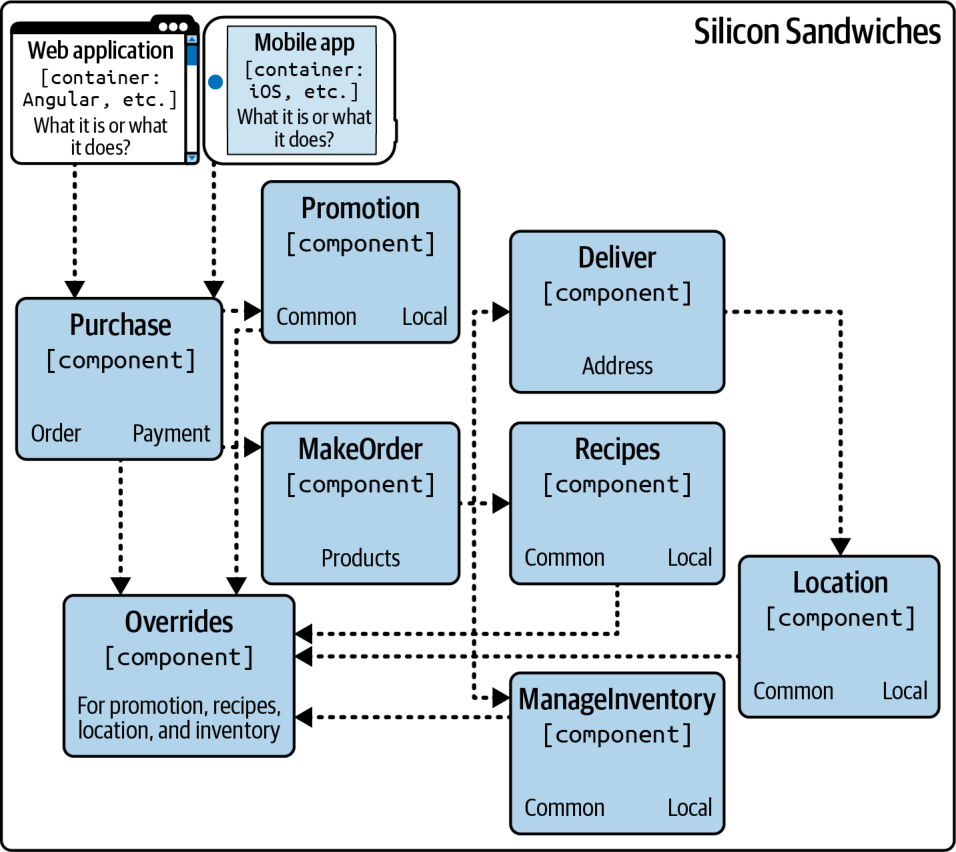
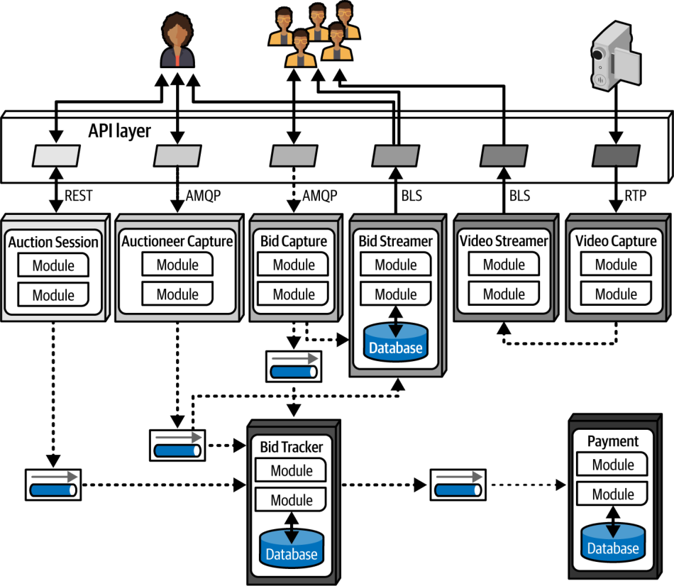

فصل ۲۳: نمودارکشی معماری
معماران نرمافزارِ تازهکار اغلب از اینکه این شغل، فراتر از دانش و تجربهٔ فنیای که در وهلهٔ نخست آنها را به این نقش رسانده، چقدر متنوع است شگفتزده میشوند. بهویژه، ارتباط اثربخش برای موفقیت معمار حیاتی است. ایدههای فنی شما هر قدر هم درخشان باشند، اگر نتوانید مدیران را برای تأمین بودجهٔ آن ایدهها و توسعهدهندگان را برای ساختنشان قانع کنید، درخشش شما هرگز نمود پیدا نخواهد کرد.
نمودارکشی (diagramming) یکی از مهارتهای ارتباطیِ حیاتی برای معماران است. هرچند دربارهٔ هر یک از این موضوعات کتابهای کاملی وجود دارد، ما به برخی نکات برجستهٔ هر کدام میپردازیم.
معمار برای توصیف بصریِ یک معماری اغلب باید دیدگاههای گوناگونی را نشان دهد: برای مثال، ممکن است با نمایی کلی از کل توپولوژی آغاز کند و سپس به جزئیات طراحیِ بخشهای مشخصی از معماری بپردازد. اما نشان دادنِ یک بخش بدون مشخص کردنِ جایگاه آن در معماری کلی، بینندگان را سردرگم میکند.
سازگاری بازنمایی (representational consistency) رویهای است که در آن همیشه پیش از تغییر دیدگاه، روابط میان بخشهای یک معماری نشان داده میشود؛ این رویه در نمودارها و ارائهها به یک اندازه اهمیت دارد. برای مثال، اگر بخواهید جزئیات ارتباط افزونهها با یکدیگر را در راهحل Silicon Sandwiches توصیف کنید، پیش از پرداختن به خودِ ساختار افزونهها، نخست با یک نمودار معماری که کل توپولوژی سیستم را نشان میدهد آغاز میکنید و سپس رابطهٔ میان آن و ساختار افزونهها را نشان میدهید. شکل ۲۳-۱ نمونهای از این کار را نشان میدهد.

سازگاری بازنمایی را با دقت به کار ببرید تا اطمینان یابید بینندگان دامنهٔ مواردِ ارائهشده را درک میکنند و یکی از منابع رایج سردرگمی را از میان بردارید.
نمودارکشی
توپولوژی یک معماری همواره برای معماران و توسعهدهندگان جذاب است، زیرا نشان میدهد ساختار چگونه کنار هم قرار میگیرد و به تیمها امکان میدهد درک مشترکِ (shared understanding) ارزشمندی شکل دهند. همهٔ معماران را تشویق میکنیم مهارتهای نمودارکشیِ خود را تا حد ممکن تیز کنند.
ابزارها
نسل کنونیِ ابزارهای نمودارکشی برای معماران بسیار قدرتمند است و هر معماری باید ابزار انتخابیِ خود را بهطور عمیق بیاموزد. اما مصنوعاتِ کمجزئیات (low-fidelity artifacts) را، بهویژه در مراحل آغازین فرایند طراحی، نادیده نگیرید. ساختنِ مصنوعات طراحیِ بسیار گذرا (ephemeral) در مراحل آغازین مانع از آن میشود که معماران بیش از حد به آنچه ساختهاند دلبسته شوند؛ ضدالگویی که آن را دلبستگی نامعقول به مصنوع (Irrational Artifact Attachment) مینامیم.
دلبستگی نامعقول به مصنوع (Irrational Artifact Attachment)
ضدالگوی دلبستگی نامعقول به مصنوع رابطهٔ متناسب میان دلبستگی نامعقول یک فرد به یک مصنوع و مدت زمانی که صرف ساختن آن مصنوع کرده است را توصیف میکند. اگر معماری چهار ساعت را صرف ساختن نموداری زیبا در ابزاری مانند Visio کند، دلبستگی نامعقولش به آن مصنوع حتی بیشتر از زمانی خواهد بود که تنها دو ساعت برای آن وقت گذاشته باشد.
یکی از مزایای رویکرد چابک (Agile) به توسعهٔ نرمافزار این است که ساختنِ مصنوعات «درست بهموقع» (just-in-time) را با کمترین تشریفات و آیین ممکن در بر دارد. این یکی از دلایلی است که بسیاری از پیروان رویکرد چابک کارتهای فهرست (index cards) و برگههای یادداشت چسبدار را دوست دارند: استفاده از ابزارهای ساده و کمفناوری به افراد امکان میدهد آنچه را درست نیست دور بریزند، آزادانه آزمایش کنند و بگذارند ماهیت واقعیِ مصنوع از راه بازنگری، همکاری و گفتوگو پدیدار شود.
مصنوع گذرای کلاسیک، عکسی است که با تلفن همراه از نموداری روی تختهسفید گرفته میشود (همراه با فرمان اجتنابناپذیرِ «پاک نکنید!»). امروزه بسیاری از معماران تختهسفید را کنار گذاشتهاند و به جای آن از تبلتی متصل به ویدئوپروژکتور استفاده میکنند. این کار چند مزیت دارد. نخست، تبلت بومی نامحدود دارد و میتواند هر تعداد طرحی را که تیم نیاز داشته باشد در خود جای دهد. دوم، به تیم امکان میدهد سناریوهای «چه میشد اگر» را کپی و جایگذاری کند؛ کاری که اگر روی تختهسفید انجام شود، طرح اصلی را میپوشاند. سوم، تصاویری که روی تبلت ساخته میشوند از پیش دیجیتالاند و بازتاب نور اجتنابناپذیرِ عکسهای تختهسفید را ندارند. چهارم، استفاده از تصاویر الکترونیکی کار از راه دور را بسیار آسانتر و مشارکتیتر میکند.
سرانجام، باید نمودارهای زیبایی را در یک ابزار پیشرفته بسازید، اما پیش از سرمایهگذاریِ این زمان، مطمئن شوید که تیم به اندازهٔ کافی روی طراحی تکرار و بازنگری کرده است. از هر پلتفرمی که استفاده کنید، ابزارهای نمودارکشیِ قدرتمندی خواهید یافت. ما با رضایت از OmniGraffle برای نسخههای اولیهٔ همهٔ نمودارهای این کتاب استفاده کردیم که سپس تصویرگران O’Reilly آنها را پرداخت کردند. هرچند لزوماً ابزاری را بر ابزار دیگر ترجیح نمیدهیم، توصیه میکنیم بهعنوان حداقل، به دنبال قابلیتهای زیر باشید:
- لایهها (Layers): ابزارهای طراحی اغلب از لایهها پشتیبانی میکنند و معماران باید استفادهٔ درست از آنها را بیاموزند. لایهها به کاربر امکان میدهند گروههایی از اقلام را بهطور منطقی به هم پیوند دهد و در صورت نیاز آنها را نمایش دهد یا پنهان کند. برای مثال، ممکن است برای یک ارائه نموداری جامع بسازید، اما جزئیات طاقتفرسا را هنگامی که مستقیماً دربارهشان صحبت نمیکنید پنهان کنید. لایهها همچنین راه خوبی برای ارائهٔ تصاویری هستند که بهتدریج کامل میشوند.
- شابلونها/الگوها (Stencils/templates): ابزارهای شابلون به کاربران امکان میدهند کتابخانهای از مؤلفههای بصریِ رایج، از جمله ترکیبهایی از دیگر شکلهای پایه، گرد آورند. برای مثال، در سراسر این کتاب نمادهای استانداردی برای چیزهایی مانند میکروسرویسهای منفرد دیدهاید؛ این نمادها در ابزار شابلونِ نویسندگان بهصورت اقلام منفرد وجود دارند. ساختن مجموعهای از شابلونها برای الگوها و مصنوعاتی که در یک سازمان رایجاند، در میان نمودارهای معماری یکدستی پدید میآورد و ساختن نمودارهای تازه را سریعتر میکند.
- آهنرباها (Magnets): بسیاری از ابزارهای طراحی برای کشیدن خط میان شکلها کمک ارائه میکنند. آهنرباها نمایانگر نقاطی روی آن شکلها هستند که خطوط بهطور خودکار به آنها میچسبند و متصل میشوند و همترازی و دیگر ظرافتهای بصری را فراهم میکنند. برخی ابزارها به کاربران امکان میدهند آهنرباهای بیشتری بیفزایند یا آهنرباهای خود را بسازند.
لایهها را معنایی به کار ببرید، نه تزئینی (Use Layers Semantically, Not Decoratively)
ما ابزارهای طراحیای را ترجیح میدهیم که از لایهها پشتیبانی کنند، اما پیشنهاد میکنیم آنها را به شیوهای معنایی به کار ببرید؛ یعنی به گونهای که به معنای کلی تصویر بیفزایند. برای مثال، لایهٔ پایهٔ هر نمودار باید نمایانگر توپولوژی معماری باشد: کانتینرها، پایگاهدادهها، وابستگیها، کارگزارها و دیگر عناصر اصلیِ آن. این لایه باید به جای پیادهسازی بر معماری تمرکز کند؛ برای نمونه، به جای نام بردن از یک پروتکل مشخص، «ارتباط همگام» را مشخص کند. لایهٔ بعدی باید جزئیات پیادهسازی را در بر داشته باشد: نوع پایگاهداده، پروتکلهای ارتباطی و جز آن.
استفاده از لایهها به این شیوه نمودارها را گسترشپذیر میکند: میتوان لایههای بافتاریِ دیگری افزود تا مرزهای طراحی حوزهمحور، دامنهٔ تراکنشی یا هر فرااطلاعات دیگری را که معمار میخواهد در برابر توپولوژی معماری قرار دهد نمایش داد.
افزون بر این قابلیتهای سودمندِ مشخص، ابزار البته باید از کارکردهای پایهای مانند خطوط، رنگها، شکلها و دیگر مصنوعات بصری پشتیبانی کند و بتواند به طیف گستردهای از قالبها خروجی بگیرد.
استانداردهای نمودارکشی: UML، C4 و ArchiMate
صنعت نرمافزار برای نمودارهای فنی از چند استاندارد رسمی استفاده میکند. در اینجا سه مورد از پرطرفدارترین آنها را بررسی میکنیم.
UML
Grady Booch، Ivar Jacobson و Jim Rumbaugh استاندارد زبان مدلسازی یکپارچه (Unified Modeling Language یا UML) را در دههٔ ۱۹۸۰ پدید آوردند تا فلسفههای طراحیِ رقیبِ خود را یکپارچه کنند. قرار بود این استاندارد بهترینِ همهٔ رویکردها باشد، اما مانند بسیاری از چیزهایی که کمیتهای طراحی میکند، بیرون از سازمانهایی که استفاده از آن را الزامی کرده بودند اثر چندانی نگذاشت. معماران و توسعهدهندگان هنوز از نمودارهای کلاس (class diagrams) و نمودارهای توالیِ (sequence diagrams) UML برای انتقال ساختار و گردشکار استفاده میکنند، اما بیشتر انواع دیگرِ نمودارهای UML از رواج افتادهاند.
C4
C4 یک فن نمودارکشی است که Simon Brown میان سالهای ۲۰۰۶ تا ۲۰۱۱ برای رفع کاستیهای UML و نوسازیِ رویکرد آن پدید آورد. «چهار C» در C4 عبارتاند از:
- بافتار (Context): کل بافتار سیستم، شامل نقشهای کاربران و وابستگیهای بیرونی.
- کانتینر (Container): مرزهای استقرارِ فیزیکی (و اغلب منطقی) و کانتینرهای درون معماری. این دیدگاه نقطهٔ تلاقیِ خوبی برای تیمهای عملیات و معماران فراهم میکند.
- مؤلفه (Component): دیدگاه مؤلفهای سیستم؛ این دیدگاه بهخوبی با نگاه معمار به سیستم همخوانی دارد.
- کلاس (Class): C4 از همان سبک نمودارهای کلاسِ UML استفاده میکند که اثربخشاند؛ بنابراین نیازی به جایگزینی آنها نیست.
C4 برای هر شرکتی که میخواهد یک فن نمودارکشیِ استاندارد برگزیند، جایگزین خوبی است. پدیدآورندگان آن سالهاست فعالاند و هواداران فراوانی گرد آوردهاند. نکتهٔ مهم اینکه C4 پابهپای تغییرات بومسازگان (ecosystem) توسعهٔ نرمافزار پیش رفته و برای بهرهگیری از قابلیتهای تازه گسترش یافته است. بسیاری از ابزارهای نمودارکشی الگوهایی برای نمودارهای C4 دارند و بومسازگان C4 ابزارها و چارچوبهایی برای کمک به معماران در بر دارد. C4 برای مؤلفهها، خطوط، کانتینرها، پایگاهدادهها و دیگر مصنوعات رایج استاندارد تعریف میکند.
نمودار C4 طراحی دادهٔ تکپارچهٔ ماژولارِ Silicon Sandwiches در شکل ۲۳-۲ آمده است.

ArchiMate
ArchiMate (واژهای آمیخته از architecture و animate) یک زبان مدلسازی (modeling language) آزاد برای معماری سازمانی از The Open Group است که برای توصیف، تحلیل و بصریسازیِ معماریها درون حوزههای کسبوکار و میان آنها به کار میرود. ArchiMate زبان مدلسازیِ سبکتری برای بومسازگانهای سازمانی ارائه میکند. هدف این استاندارد فنی این است که «تا حد ممکن کوچک» باشد، نه اینکه همهٔ حالتهای مرزی را پوشش دهد. ArchiMate انتخابی پرطرفدار در میان معماران است.
رهنمودهای نمودارکشی
هر معماری باید سبک نمودارکشیِ خود را بسازد؛ چه از زبان مدلسازیِ خودش استفاده کند و چه از یکی از زبانهای رسمی. وام گرفتن از بازنماییهایی که به نظرتان بهویژه اثربخشاند اشکالی ندارد. این بخش رهنمودهایی کلی برای ساختن نمودارهای فنی ارائه میکند.
عنوانها
مطمئن شوید که همهٔ عناصر نمودار عنوان دارند، مگر آنکه برای مخاطبان کاملاً شناختهشده باشند. از چرخش و جلوههای دیگر استفاده کنید تا عنوانها به چیز درست «بچسبند» و از فضا بهطور کارآمد استفاده شود.
خطوط
خطوط باید به اندازهٔ کافی ضخیم باشند تا بهروشنی دیده شوند. اگر خطوط جریان اطلاعات را نشان میدهند، از پیکان برای نشان دادنِ ترافیک یکسویه یا دوسویه استفاده کنید. انواع مختلف سرپیکانها ممکن است معناهای متفاوتی را القا کنند؛ فقط یکدست باشید.
یکی از معدود استانداردهای عمومی در نمودارهای معماری این است که خطوط پیوسته تقریباً همیشه نشاندهندهٔ ارتباط همگاماند و خطوط نقطهچین نشاندهندهٔ ارتباط ناهمگام.
شکلها
هرچند همهٔ زبانهای مدلسازیِ رسمیای که توصیف کردیم شکلهای استاندارد دارند، مجموعهٔ فراگیری از شکلهای استاندارد در سراسر دنیای توسعهٔ نرمافزار وجود ندارد. بیشتر معماران مجموعهٔ شکلهای استاندارد خود را میسازند؛ گاهی این مجموعهها در سراسر یک سازمان پذیرفته میشوند تا زبانی استاندارد پدید آورند.
ما معمولاً از جعبههای سهبعدی برای نشان دادنِ مصنوعات قابل استقرار (deployable artifacts)، از مستطیل برای نشان دادنِ کانتینرها و از استوانه برای نمایش پایگاهدادهها استفاده میکنیم، اما فراتر از آن راهنمای خاصی نداریم.
برچسبها
برچسب زدن به هر قلم در نمودار مهم است، بهویژه اگر کوچکترین احتمال ابهامی وجود داشته باشد.
رنگ
معماران اغلب به اندازهٔ کافی از رنگ استفاده نمیکنند. سالها کتابها از روی ناچاری سیاهوسفید چاپ میشدند، از این رو معماران و توسعهدهندگان به طرحهای تکرنگ عادت کردند. هرچند ما هنوز تکرنگ را ترجیح میدهیم، هر جا رنگ به تمایز یک مصنوع از دیگری کمک کند از آن استفاده میکنیم. برای مثال، هنگام بحث دربارهٔ کوانتوم معماری میکروسرویسها در فصل ۱۹، در شکل ۱۹-۶ (که در اینجا بهصورت شکل ۲۳-۳ بازتولید شده) برای نشان دادنِ گروهبندی از سایههای خاکستری استفاده کردهایم.

با این حال، در استفاده از رنگ برای نشان دادنِ تفاوتهای حیاتی محتاط باشید؛ افرادی که کوررنگی یا دیگر ناتوانیهای بینایی دارند نمیتوانند این تمایز را ببینند. پیشنهاد میکنیم افزون بر رنگ از نمادهای منحصربهفرد نیز استفاده کنید تا اگر کسی نتواند رنگ را تشخیص دهد، همچنان معنا را درک کند؛ درست همانگونه که چراغهای عابر پیاده از سبز برای حرکت و از قرمز برای توقف استفاده میکنند، اما برای هر رنگ نقش متفاوتی نیز نشان میدهند.
راهنما
اگر شکلهای یک نمودار به هر دلیلی مبهماند، راهنمایی بگنجانید که بهروشنی نشان دهد هر شکل نمایانگر چیست. نموداری که بهآسانی بد تفسیر شود از نبودِ نمودار بدتر است.
جمعبندی
استانداردهای نمودارکشی راهی سودمند برای فراهم کردن ارتباطی یکدست در سازمانها هستند. با این حال، معماران اغلب قواعد را زیر پا میگذارند؛ بهویژه هنگامی که استاندارد راه خوبی برای بازنمایی طراحی ارائه نمیکند. سازمانها را تشویق میکنیم استانداردهایی وضع کنند، اما استثناهای معقول را نیز مجاز بدانند.
در گذشته، هنگامی که ابزارهای سنگینِ مهندسی نرمافزارِ رایانهیار (computer-assisted software engineering یا CASE) رایج بودند، معماران ناچار بودند برای بازنمایی چیزهای ساده مدلهای پیچیدهای بسازند. آنها اغلب مجبور بودند جزئیات بیفایدهٔ فراوانی را بگنجانند که در آن بافتار مشخص چیزی جز نویز نبود. ما ابزارهای نمودارکشیِ سبک و مصنوعاتِ سریع و بیتکلف را، بهویژه در مراحل آغازین فرایند طراحی، ترجیح میدهیم. فقط آنقدر شیفتهٔ ساختههای خود نشوید که عینیت خود را از دست بدهید.
واژهنامهٔ اختصاصی این فصل
| واژهٔ انگلیسی | معادل مصوب/بهکاررفته در این فصل |
|---|---|
| Diagramming | نمودارکشی |
| Representational Consistency | سازگاری بازنمایی |
| Shared Understanding | درک مشترک |
| Low-Fidelity Artifacts | مصنوعات کمجزئیات |
| Ephemeral (artifact) | گذرا |
| Irrational Artifact Attachment (antipattern) | دلبستگی نامعقول به مصنوع |
| Agile | چابک |
| Just-in-Time | درست بهموقع |
| Index Cards | کارتهای فهرست |
| Layers (diagramming tools) | لایهها |
| Stencils/Templates | شابلونها/الگوها |
| Magnets (diagramming tools) | آهنرباها |
| Unified Modeling Language (UML) | زبان مدلسازی یکپارچه (UML) |
| Class Diagram | نمودار کلاس |
| Sequence Diagram | نمودار توالی |
| Context (C4) | بافتار |
| Container | کانتینر |
| Component (C4) | مؤلفه |
| Class (C4) | کلاس |
| Ecosystem | بومسازگان |
| Modeling Language | زبان مدلسازی |
| Deployable Artifact | مصنوع قابل استقرار |
| Computer-Assisted Software Engineering (CASE) | مهندسی نرمافزار رایانهیار (CASE) |